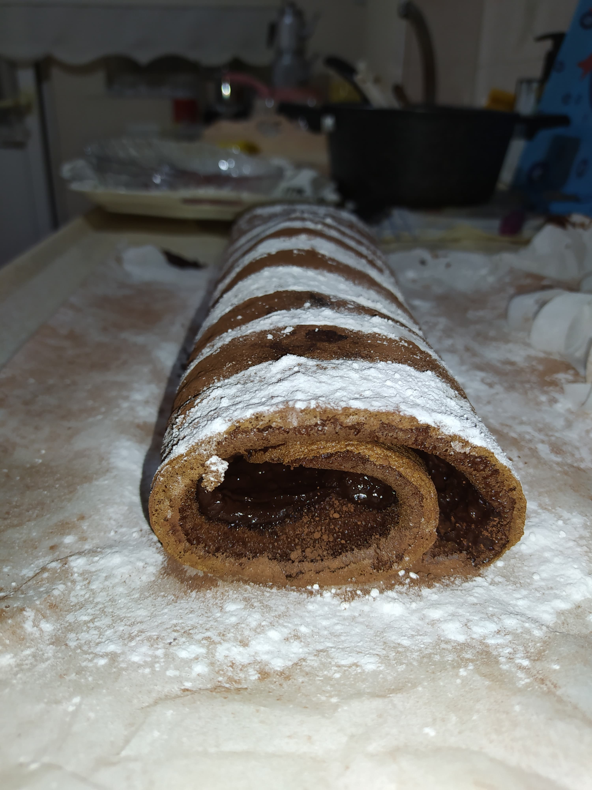
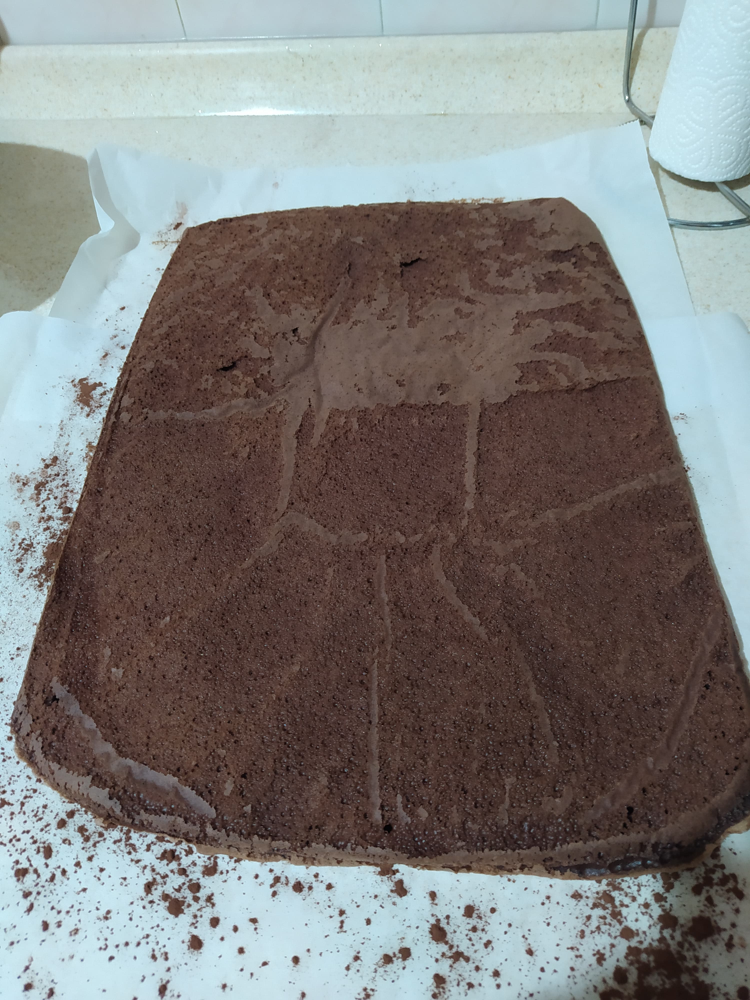
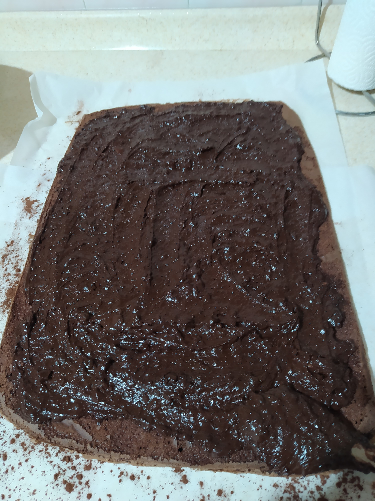
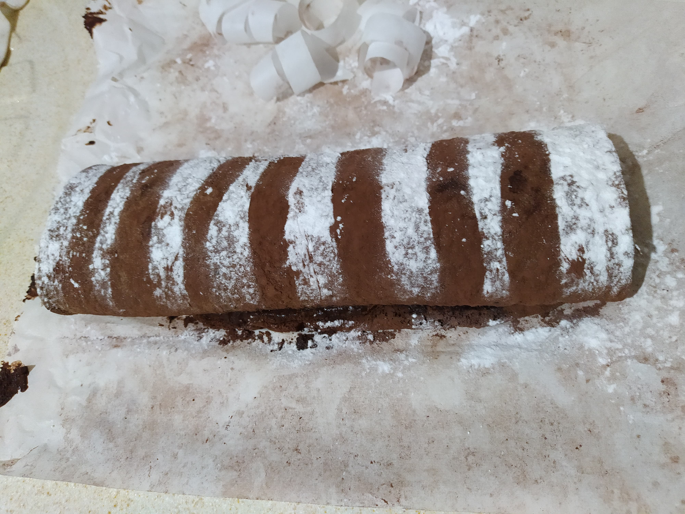

Swiss Roll

Bitter çikolatalı ganajlı İsveç keki!(Rulo kek)
Malzemeler
Keki için:
- 3 yumurta
- 1 su bardağı şeker
- 1 su bardağı süt
- 2 su bardağı un
- 2 yemek kaşığı kakao
- 1 paket vanilya
- 1 paket kabartma tozu
Ganaj için:
- 200 gr krema
- 200 gr bitter çikolata
Tarif
- Öncelikle yumurta ve şekeri kaba alıp çırpıyoruz.
- Öbür kek malzemelerimizi ekleyip karıştırmaya devam ediyoruz.
- Uzunca bir kalıba ya da borcama yağlı kağıdımızı seriyoruz ve
harcımızı döküyoruz.
- Önceden ısıttığımız fırınımızı 175 dereceye alıp harcımızı yaklaşık
yarım saat pişiriyoruz(kürdan kontrolü ile)
- Ganajımızı hazırlamak için benmari usulü ile çikolatalarımızı eritiyoruz.
- Ardından kremamızı ekleyip yavaşça karıştırıyoruz.(kıvamı çok akışkan gelir
ise çikolata oranını arttırın,
çok koyu olur ise süt ekleyin)
- Ganajımızı bir kenara soğumaya bırakıyoruz.
- Bir yağlı kağıda kakao serpiyoruz ve kekimizi ters çevirip
bu yağlı kağıda seriyoruz.

- Kekimizin üstüne ganajımızı sürüp kekimizi sıkıca yuvarlıyoruz.

- Süslemek için bir yağlı kağıdı şeritler halinde kesip rulo kekimizin
üstüne yerleştiriyoruz ve üzerine pudra şekeri serpiyoruz.

Afiyet olsun :).